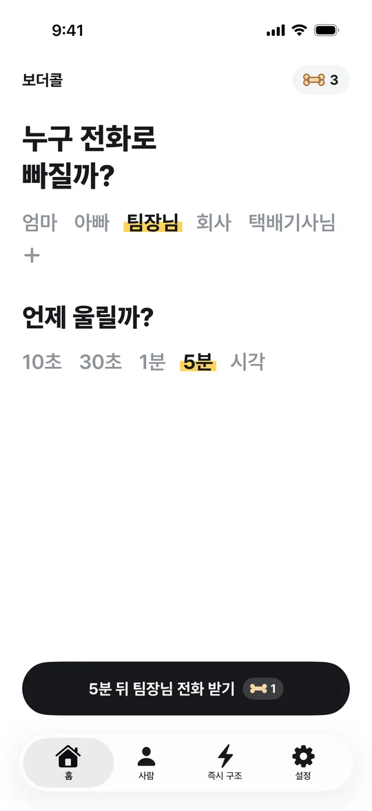
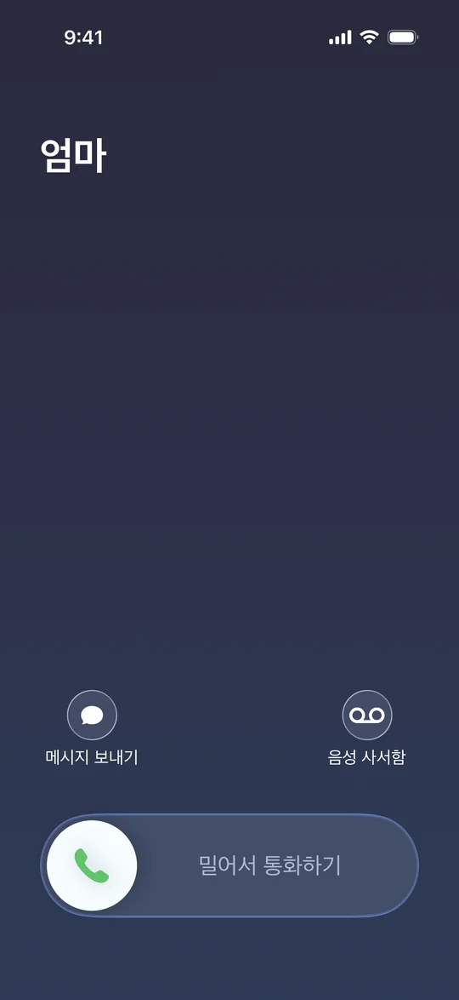
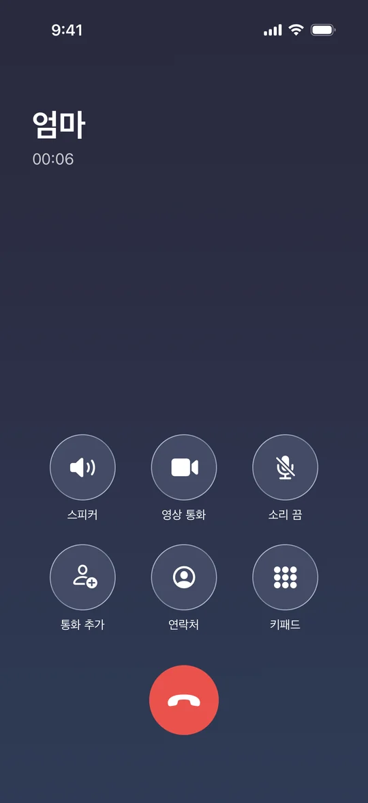

보더콜
앱스토어에서 받기
빠지고 싶은 자리에서
자연스럽게 일어나요
끝나지 않는 회의, 일어날 타이밍을 놓친 회식과 모임. 보더콜은 정한 시각에 진짜 같은 전화 모양 알람을 울려 줘요. 전화를 받으며 자리에서 일어나면 돼요.



이렇게 써요
버튼 한 번이면 끝이에요
1
누구 전화로 빠질지 골라요
엄마, 아빠, 팀장님, 회사, 택배기사님. 이름과 번호는 직접 바꿀 수 있어요.
2
언제 울릴지 골라요
10초, 30초, 1분, 5분 뒤 또는 원하는 시각.
3
버튼을 누르고 기다려요
그 시각에 전화 모양 알람이 울려요. 화면이 꺼져 있어도 울려요.
예약할 틈도 없을 땐
즉시 구조로 앱을 안 켜고 불러요
안드로이드
- 측면 버튼 두 번 누르기
- 알림창 빠른 설정 버튼
- 앱 아이콘 꾹 누르기 메뉴
아이폰
- 동작 버튼
- 뒷면 두 번 톡톡
- "시리야, 보더콜 즉시 구조"
알아 두세요
- 보더콜은 진짜 전화를 걸거나 받지 않아요. 정한 시각에 전화처럼 보이는 알람을 울려요.
- 이름, 번호, 예약 시각은 휴대폰 안에만 저장돼요. 회원가입이 없고, 정보를 밖으로 보내지 않아요.
문의